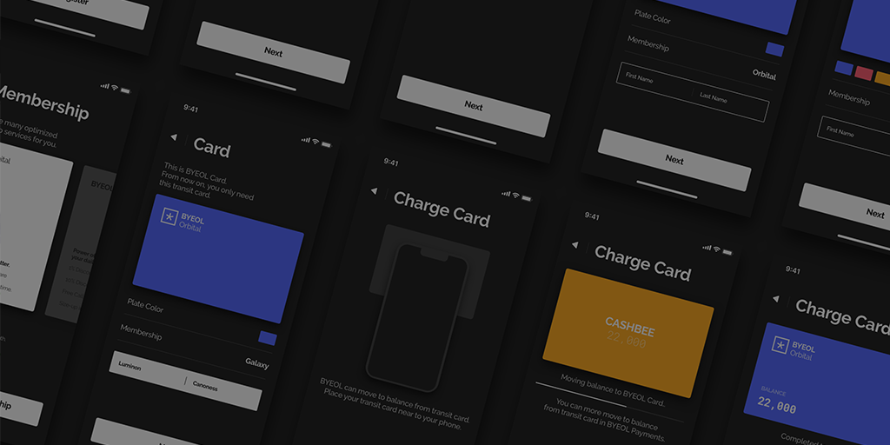

안녕하세요!
제 트위터에 방문하신 것을 환영합니다 >_<)// 저는 Luminon Canoness라고 합니다!
저는 UI 디자인이 직업인 디자이너를 하고 있습니다. 이 외에도 다양한 분야의 디자인을 시도해 보기도 하고, 여행을 다니고 여행기를 정리해보기도 하고, 사진들을 찍어보거나 리뷰를 써내려가기도 하는 등 다양한 것들을 해보고 있어요. 만나서 반가워요!
Twitter에서는 이렇게 지내고 있어요!
집에가고싶어합니다특별한 주제 없이 다양한 이야기를 하고 있습니다.
Twitter라는 서비스가 삶의 소소한 부분까지 일기처럼 기록할 수 있는 SNS라고 생각해서 특정 주제에 대해 이야기 하기 보다는 집에 가고 싶어 한다거나.. 듣고 있는 노래를 트윗한다거나.. 무언가 쓸데없는걸 사서 자랑하거나 하는 등 순간순간의 생각을 쓰는 편이에요. 가끔가다 본업인 디자인에 관한 트윗도 하고요!
저는 팔로우, 언팔로우, 블락, 뮤트, 인용, 멘션 등 Twitter 본연의 기능들을 별로 신경쓰지 않습니다. 만약에 제가 하는 이야기들이 맘에 드시거나 저와 이야기 하고 싶으시면 부담없이 팔로우를, 반대로 저와 맞지 않으시다면 언팔로우, 블락, 뮤트 등을 하셔도 괜찮아요. 인용이나 초면 멘션도 상관 없습니다! 대신, 정말 신경을 쓰지않아 대부분의 알림을 끄고 살기 때문에 맞팔로우를 원하시면 멘션 한개만 부탁드립니다..! 바로 확인하고 팔로우 할게요!
또한 트위터상에서는 정치적, 사상적 이야기를 일체 하지 않으려 하고 있습니다. 이런 민감한 문제는 140글자 안에 담아봤자 오해와 분쟁만을 불러오기 때문이에요. 더불어, 과격한 정치나 사상적 표현은 뮤트 및 블락하고 있습니다.
이런 것들을 하고 있어요.

본업으로는 UI / UX 디자인, 주로 모바일 플랫폼의 UI를 설계하고 디자인하는 일을 하고 있어요. 하지만 저도 신입이라 배워갈 게 많답니다. 그렇기 때문에 디자인 관련해서 이야기 나누는것도 환영이에요!
취미 생활로는 위에서 썼었던것처럼 블로그인 Itsuka.space에서 포트폴리오, 리뷰, 여행기 등 다양한 포스트를 써내려 가고 있습니다. 그것을 위해 사진을 찍거나 여행을 다녀오는 등 다양한 활동도 하고 있고요. 가끔론도를 그림이나 도트 일러스트로 그리기도 합니다. 옛날부터 제 그림실력이 형편없었던 터라 지금도 갈길이 멀지만, 조금조금 실력이 발전하고 있을 것이라 믿고 있어요!
에니메이션이나 SF/액션 영화를 정말 좋아합니다! 특히 건담 시리즈는 정말로 좋아해서 꼭 챙겨보고 있어요. 지크 지온!!
취직을 하게 되면서 시간이 조금 널널해져 문화생활(?)을 즐겨볼 겸 게임도 차차 시작하고 있습니다. 컴퓨터 게임은 최근 배틀그라운드, 레인보우식스 시즈, 등을 최근 즐겨하고 PS4나 Nintendo Switch 게임들 또한 회사 다녀오고 나서 즐겨 하고 있습니다. 이곳에서 게임 아이디를 확인할 수 있으니 때가 되면 같이 게임하도록 해요!
뭐라 부르면 되냐구요?
Luminon Canoness는 루미논 카노네스라고 읽으며, 일본어로는 ルミノンカノネス - ruminon kanonesu, 중국어로는 入迷款式 - Rùmí kuǎnshì로 각각 발음하고 적습니다!
루미논 카노네스 풀 닉네임을 불러주셔도 되고 루미논, 논등 줄여 부르셔도 되요!
게임할 때에는 닉네임으로 LEQ(에리큐)를 사용합니다! 가끔 안될때에는 atLEQ이나 LEQIA같은 변종을 쓰기도 해요.
다른 트위터 계정도 있어요~!
루미논뺘ㅃ은 학교를 졸업하고 더이상 선린뺘ㅃ을 먹지 못하게 되었기 때문에 회사를 다니면서 먹는 점심밥을 트윗하는 계정입니다. 나중에 모아서 맛집들을 정리해서 맛집바이블을 만들어볼까 생각도 가지고 있어요 ㅎㅎ
엉망이 된 글씨를 복구하기 위해서 다양한 글들을 써보는 계정인 루미논 글쓰기 계정도 있습니다. 이 계정에 쓰기 좋은 짧은 문장을 멘션해 주시면 글을 써서 게시해 드립니다! 어느나라 언어든 좋아요!